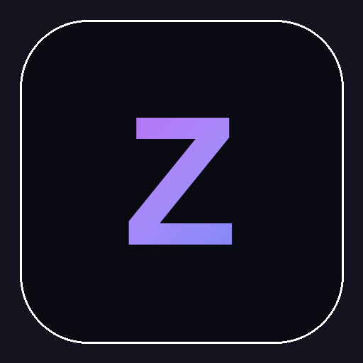

Zero Cool
Script kiddy to kingpin. Build the crew, take the neighborhood.
Zero Cool is a street-to-kingpin crime empire game for PC, premium and one-time purchase with no in-app purchases. You start as a script kiddy with a rig in a bedroom and four hacking verbs, and finish running a neighborhood. Five chapters, each recruiting one crew member with a skill of their own: the hacker, the enforcer, and the ones after them. Underneath sits a living city that keeps moving whether you are watching or not: around 200 simulated residents, a law system that reacts, rival factions, territory that changes hands, and a market that prices itself. The project began as a pure hacking sim and pivoted in July 2026 to the crime empire above. Hacking became Chapter 1 and the crew's first skill, and roughly eighty percent of the original engine carried straight over.
Screenshots //
Dev log //
This project changed shape halfway through. Everything before 25 July 2026 is a solo hacking sim; after it the game is a street-to-kingpin crime empire, with hacking demoted to Chapter 1 and most of the engine carried over intact.
- Dress the other four landmarks: no gray box is left in the game
- Dress the Helix Tower: the endgame breach is a building now
- Paid geometry only: replace the free-tier props and the Apocalypse houses
- The crowd is on the characters you bought
- Finish the home block walls: facades up to the exit mouth
- Home block walls: real facades instead of primitive slabs
- Vendor the Synty prefab library: 1,092 prefabs, usable by name
- Day/night: a real sky, repainted continuously
- Movement pass: gait from speed, camera to 3m over the shoulder
- Drug units crashed the Stash/Market screens (missing 'freshness')
- Fix the crowd moonwalking backwards, found in play
- THE WIRE: surface the evidence the world was already writing
The 12 most recent changes worth reading, out of 320 commits.
Every line above is a real commit from this app's repository, on the date it was made. Build chores, merges and internal housekeeping are filtered out.